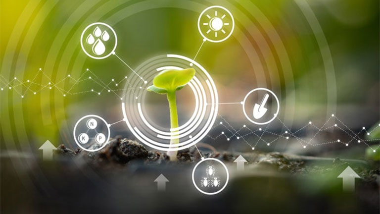
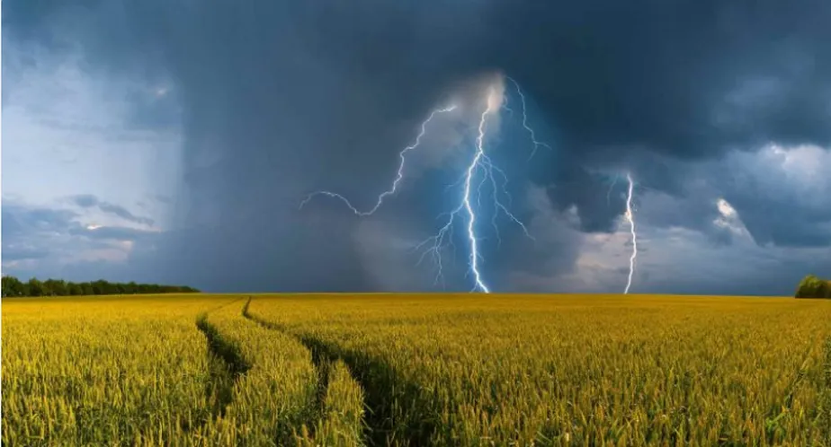
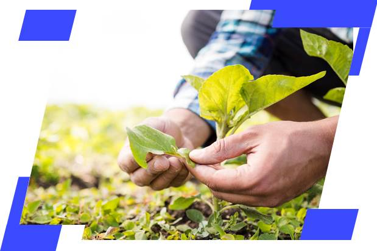

Introdução
educação e formação no meio rural são essenciais para o desenvolvimento sustentável e a melhoria da qualidade de vida nas comunidades rurais.
Importância da Educação no Meio Rural
Desenvolvimento Econômico: A educação rural contribui para a melhoria das práticas agrícolas, aumento da produtividade e diversificação econômica.
Empoderamento das Comunidades: Proporciona às comunidades rurais as ferramentas e conhecimentos necessários para tomar decisões informadas e promover o desenvolvimento local.
Redução do Êxodo Rural: A formação adequada pode reduzir a migração para as cidades, mantendo a força de trabalho e a cultura local.

Desafios da Educação no Meio Rural
Acesso Limitado: Muitas áreas rurais enfrentam dificuldades de acesso a escolas e instituições de ensino de qualidade.
Infraestrutura: A falta de infraestrutura adequada, como transporte e tecnologia, prejudica o aprendizado.
Capacitação de Professores: A escassez de professores qualificados e treinamentos específicos para as necessidades rurais é um desafio constante.

Iniciativas e Programas de Sucesso
Educação à Distância: Uso de tecnologias como internet e rádio para oferecer cursos e aulas online.
Escolas Agrícolas: Instituições focadas na formação técnica e prática em agricultura e pecuária.
Parcerias Público-Privadas: Colaboração entre governos, ONGs e empresas privadas para melhorar a infraestrutura e recursos educacionais.

Formação Profissional e Técnica
Cursos Técnicos: Oferecimento de cursos técnicos em áreas como agricultura, pecuária, agroindústria, e gestão ambiental.
Capacitação de Jovens e Adultos: Programas de alfabetização e educação continuada para adultos, visando a inclusão e o desenvolvimento profissional.
Empreendedorismo Rural: Formação e apoio ao empreendedorismo rural, incentivando a criação de pequenos negócios e cooperativas.

Sustentabilidade e Educação Ambiental
Práticas Sustentáveis: Educação sobre práticas agrícolas sustentáveis e conservação ambiental.
Projetos de Energia Renovável: Capacitação em tecnologias de energia renovável como solar e biogás.
Conservação de Recursos Naturais: Iniciativas para a preservação de recursos hídricos, solo e biodiversidade.